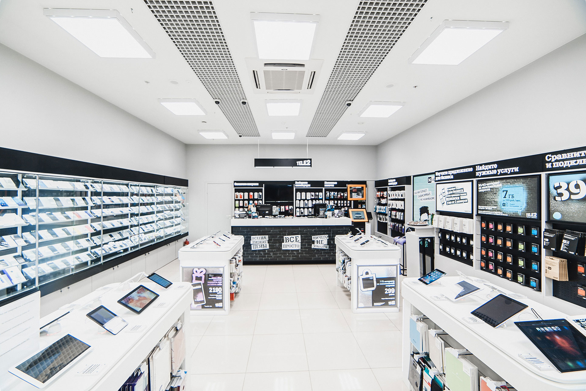

Салоны мобильной связи |
||

Не просто точка продажи..."Салоны мобильной связи – это не просто места для приобретения телефонов и подключения тарифов. Они представляют собой уникальные пространства, где технологии встречаются с комфортом. В современных салонах вы можете не только выбрать последние модели смартфонов, но и получить квалифицированную консультацию, подобрать оптимальный тариф, а также решить технические вопросы поддержки. Эти уютные места несут на себе функцию информационных центров, где клиенты могут ознакомиться с последними технологическими новинками, протестировать устройства, а также узнать о специальных акциях и предложениях. Создавая комфортное пространство для клиентов, салоны мобильной связи стремятся сделать процесс выбора и использования мобильных технологий максимально приятным и удобным." Создание Удобной Среды: Как Салоны Мобильной Связи Делают Покупки ПриятнымиПомимо технической стороны, салоны мобильной связи также ориентированы на создание уникального клиентского опыта. Современные интерьеры, удобные зоны ожидания и демонстрационные площадки способствуют приятной атмосфере внутри салона. Это место, где клиенты могут не только совершить покупку, но и провести время, получив удовольствие от процесса. |
+375xxxxxxxxx(МТС) +375xxxxxxxxx(А1) Кохан Даниил 2 курс, 11 группа Салоны моб. связи 20.02.2024 |
|
Салоны мобильной связи - ваш путь к современным технологиям с комфортом и профессиональным обслуживанием. |
||